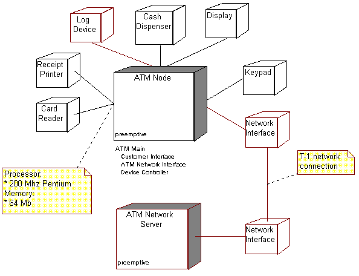

Concepts:
Deployment View
To provide a basis for understanding the physical distribution of the system
across a set of processing nodes, an architectural view called the deployment
view is used in the Analysis & Design workflow. The deployment view
(one of five views - see below) illustrates the distribution of processing
across a set of nodes in the system, including the physical distribution of
processes and threads. The deployment view is refined during each iteration.

The deployment view shows the physical distribution of
processing within the system.
There are four additional views, the Use-Case View (handled
in the Requirements workflow), and the Logical View, Process
View, and Implementation View; these views are handled
in the Analysis & Design, and Implementation workflows.
The architectural views are documented in a Software Architecture
Document. You may add different views, such as a security view, to
convey other specific aspects of the software architecture.
So in essence, architectural views can be seen as abstractions or
simplifications of the models built, in which you make important characteristics
more visible by leaving the details aside. The architecture is an important
means for increasing the quality of any model built during system development.
Copyright
© 1987 - 2001 Rational Software Corporation
|  Disciplines >
Disciplines >
 Analysis & Design >
Analysis & Design >
 Concepts >
Concepts >